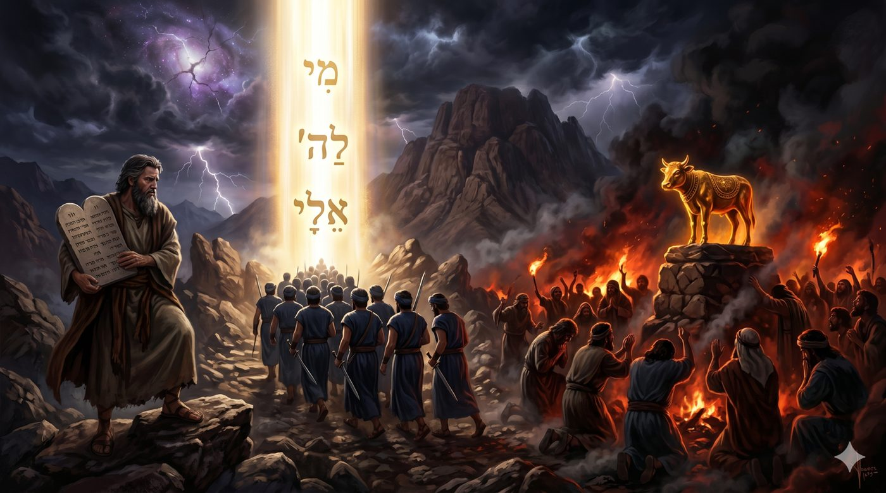
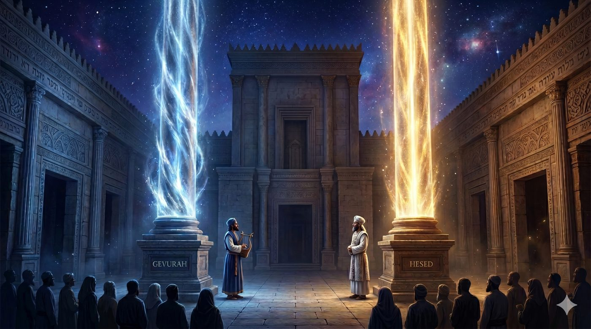

La Temoura, la substitution Vivre à la place de celui qui a failli
Ouvrons le huitième chapitre du Livre des Nombres et arrêton-nous sur un détail que la lecture courante escamote trop vite. D.ieu ordonne à Moché de consacrer les Lévites pour le service du Michkan, et la Torah choisit pour cela un vocabulaire qui ne devrait pas s'appliquer à des êtres humains. Elle dit que les fils d'Israël poseront leurs mains sur les Lévites ( Bamidbar 8:10 ), puis que les Lévites seront agités en guise d'offrande d'agitation devant l'Éternel ( Bamidbar 8:11 ). Le mot est תְּנוּפָה / offrande ( tnoufa ), offrande d'agitation, et il appartient normalement au registre des sacrifices animaux. On agite l'agneau. On agite la farine. On agite les prémices du troupeau. Et ici on agite des hommes.
Et pourtant la Torah l’ordonne, et elle ajoute, quelques versets plus tard, que les Lévites sont pris parmi les fils d'Israël à la place (Tah’at) de tous les premiers-nés ( Bamidbar 8:16 ). Ce mot revient quatre fois dans ce seul passage, martelé avec une insistance qui ne peut pas être involontaire. Les Lévites ne sont pas simplement un groupe sacré parmi d'autres. Ils sont des substituts. Ils occupent la place d'autres. Ils vivent à la place de ceux qui auraient dû être là, mais qui n'ont plus le droit de l'être.
Mais la question que ce texte pose ne se résout pas facilement. Qu'est-ce que cela signifie de vivre à la place d'un autre ? Peut-on bâtir une identité entière sur une Temoura תְּמוּרָה / une substitution ? Et si cette substitution n'est pas une blessure infligée par les circonstances, mais
une vocation gravée dans l'architecture même du monde, que change-t-elle à notre façon de nous tenir dans l'existence ?
Ce chiour propose, avec l'aide du Ciel, d'explorer le concept de תְּמוּרָה / Temoura la substitution, à travers le prisme du chapitre 8 de Bamidbar et de l'inauguration des Lévites. À travers les éclairages de Rachi et du Sifra, du Talmud Bavli Beh’orot, du Zohar Beha'alotéh'a, du Maharal de Prague dans son Gour Aryeh, du Ramhal, du Sfat Emet et du Nefesh HaHaïm de Rav Haïm de Volozhin, nous tenterons de montrer que la substitution n'est pas un accident de l'histoire ni une consolation accordée à ceux qui ont raté leur tour. Elle est une architecture, une loi cosmique, et, pour celui qui sait la recevoir, la voie d'une grandeur que le premier rang ne donne jamais.
• La substitution des Levites : quand la Torah agite des âmes comme des offrandes
• Le premier-né déchu : la substitution que le Veau d'Or a rendue nécessaire
• "À leur place" : la substitution une élection
• Ce qui résiste à toute substitution : les limites du principe selon Bekhorot
• Lévites et Cohanim : la substitution qui équilibre le monde, Gevourah face à Hessed
• La médiation comme loi cosmique : la substitution n'est pas un accident, c'est une architecture
• L'identité dans la substitution : comment se construire quand on occupe la place d'un autre ?
• Le Lévite comme דַּעַת / connaissance du peuple : la substitution qui relie ce qui ne peut se rejoindre seul
• Chaque homme est son propre Lévite : la substitution intérieure des inclinations brutes
• Le monde sans substitution : quand chaque âme retrouvera sa place première
Commençons par la blessure, parce qu'aucune substitution ne s'explique sans elle. Avant le veau d'or, les premiers-nés d'Israël occupaient une place sacrée. La Torah le dit sans ambiguïté dès le Livre de l'Exode : lors de la plaie des premiers-nés d'Égypte, D.ieu avait sanctifié pour lui tous les premiers-nés d'Israël ( Chemot 13:2 ). Ils devaient servir dans le Michkan et être les Cohanim naturels de la nation, les prêtres par droit de naissance. Leur sainteté n'était pas méritée par leurs actes mais constitutive. Ils étaient premiers-nés, et c'était suffisant.
Puis vint la faute du veau d’or. Le texte de Chemot 32 est brutal dans sa précision. Pendant que Moché reçoit les Tables de la Loi sur la montagne, le peuple, pensant que Moché était mort, constitue une idole. Dans cet élan, les premiers-nés ne résistent pas et le Talmud Bavli (Beh’orot) précise qu'ils participèrent activement au culte du Veau. Eux qui étaient désignés pour le service de D.ieu, cédèrent à la faute, au moment même où ce service était le plus urgent.
Les Lévites, eux, ne cédèrent pas. Quand Moché descend de la montagne et lance l'appel, “mi l'Hachem elaï”, qui est pour l'Éternel, qu'il vienne à moi ( Chemot 32:26 ), ce sont les fils de Lévi qui se rassemblent autour de lui. Nous ne sommes pas ici face à un mérite abstrait mais face à un choix concret, réalisé dans le chaos, face à une foule abandonnée à la fièvre de l'idole. La fidélité du peuple de Levi ne vient pas de leur droit d’ainesse, elle s'est gagnée.
Rachi, commentant Bamidbar 3:12, formule la conséquence avec une netteté chirurgicale. Parce que les premiers-nés ont failli, parce qu'ils se sont souillés dans le Veau, leur sainteté leur a été retirée. Et les Lévites, qui ne s'étaient pas souillés, les ont remplacés -Tahat.
La תְּמוּרָה / substitution apparait dans toute sa nudité historique, une tribu hérite de la sainteté d'une autre parce que cette autre a manqué à l'appel. On ne peut pas le comprendre si l'on ne tient pas les deux bouts en même temps : la chute de l'un et la montée de l'autre sont les deux faces d'un seul et même mouvement.
Le mot תַּחַת / à la place ( tahat ) mérite qu'on s'y arrête, car il est le pivot secret de tout ce passage. La Torah l'emploie quatre fois en sept versets. Cette répétition martelée n'est pas un artifice stylistique mais une insistance délibérée. La Torah veut que nous entendions ce mot, que nous y revenions, que nous ne l'esquivions pas. Tahat : à la place de, en échange de, en remplacement de.
Mais tahat est plus riche qu'il n'y paraît. C'est aussi le mot de l'Akéda. Quand Avraham lève les yeux après l'intervention de l'ange et voit le bélier pris dans les broussailles, la Torah dit qu'il l'offrit en holocauste à la place de son fils, “tahat béno” ( Béréchit 22:13 ). Le même mot. La תְּמוּרָה / Temoura / substitution de l'Akéda est l'une des plus étudiées de toute la Torah, parce qu'elle révèle que la substitution peut être, dans certaines circonstances, une grâce. Le bélier ne subit pas la mort d'Its'hak pour effacer Its'hak. Il la reçoit pour que Its'hak continue à vivre et accomplisse ce qu'il était destiné à accomplir. La substitution est ici au service de la vie, non de l'effacement.
Le Sfat Emet ( Beha'alotéh'a, 5641 ) lit le tahat des Lévites dans la même lumière. La תְּמוּרָה / Temoura / substitution n'est pas une relégation au second rang. C'est un don fait à ceux qui ont la force de l'assumer. Le Lévite n'est pas un premier-né de remplacement, une copie de seconde qualité. Il est quelqu'un qui a été choisi pour occuper une place abandonnée, et cette élection porte une dignité que le premier rang originel ne possédait pas, parce que le premier rang n'avait jamais été éprouvé.

Il y a une psychologie de la substitution qu'on peut nommer sans détour. Celui qui arrive en second ressent souvent le poids du premier. Il vit sous l'ombre d'une place qu'il n'a pas créée. Mais la paracha ne présente pas les Lévites comme des héritiers embarrassés. Il les présente comme des offrandes agitées devant D.ieu, corps et âme mobilisés, pleinement présents dans le service. La תְּנוּפָה / offrande est le signe de cette présence totale. On agite ce qui est entièrement donné.
Ce que la Torah montre dans l'inauguration des Lévites, c'est qu'il est possible de vivre à la place d'un autre sans vivre dans l'ombre d'un autre, et que cette liberté intérieure est précisément ce que la fidélité au moment du Veau d'Or avait rendu possible.
La תְּמוּרָה / substitution est une loi. Mais toute loi a des limites, et ces limites révèlent ce qu'elle protège en profondeur. Le Talmud Bavli consacre une partie du traité Beh’orot à préciser les contours juridiques de la substitution des premiers-nés, et cet examen minutieux est d'une richesse philosophique que l'on aurait tort de laisser de côté.
Le principe de base est simple. Chaque premier-né Israélite doit être racheté par un Cohen moyennant cinq shekalim ( Bamidbar 18:16 ), en mémoire du fait que sa sainteté a été transférée aux Lévites. Ce rachat est symbolique, mais il dit quelque chose d'essentiel : le premier-né n'est pas effacé par la תְּמוּרָה / substitution. Il est racheté, dans le sens où il porte encore une trace de sainteté originelle qui demande à être honorée même si elle ne peut plus être exercée dans le Michkan. Ainsi la substitution ne détruit pas ce qu'elle remplace mais elle le transforme en mémoire vivante.
Mais il est une chose que la תְּמוּרָה / substitution ne peut pas faire. Elle ne peut pas remplacer une âme par une autre dans sa singularité la plus profonde. La Guemara, dans le traité Bechorot 49, enseigne que si un premier-né meurt avant que la mitsva de pidyon haben ne soit arrivée à échéance (avant le 30ᵉ jour), cette obligation ne s’est jamais appliquée à lui ; en revanche, le prochain fils qui sera le premier à atteindre ce seuil d’âge fera lui-même l’objet d’une nouvelle mitsva de rachat. La sainteté ne se « transfère » pas d’un enfant à l’autre : chaque vie est irréductible. Aucune תְּמוּרָה / substitution ne peut aller jusqu’à dire que cette vie-ci est identique à cette vie-là dans leur essence la plus profonde.
Le Ramban, dans son commentaire sur le verset nefesh tahat nefesh ( Chemot 21:23 ), une vie à la place d'une vie, prend soin de distinguer la réparation juridique de la réalité métaphysique. La loi peut exiger une compensation équivalente pour maintenir l'ordre du monde. Mais deux vies ne sont jamais identiques et la Torah le sait mieux que quiconque.
Ce que la תְּמוּרָה / substitution accomplit dans l'histoire, c'est la mise en œuvre d’un équilibre fonctionnel, une justice possible dans l'imperfection du monde. Elle préserve l'ordre sans prétendre abolir la singularité irréductible de chaque âme qu'elle met en mouvement.
Pour comprendre pourquoi les Lévites et non une autre tribu ont reçu la place des premiers-nés, il faut entrer dans la structure mystique du peuple d'Israël telle que le Zohar la déploie. Cette structure
révèle que la תְּמוּרָה / substitution n'est pas seulement un arrangement historique mais est une nécessité profonde de l'équilibre du monde.
Le Zohar ( Beha'alotéh'a, Bamidbar 153a ) enseigne que les Cohanim correspondent dans la structure spirituelle du peuple à l’attribut de Hessed ( חֶסֶד ), la bonté, l'expansion, le flux généreux vers l'extérieur. Le Cohen bénit, offre, répand la lumière vers le peuple avec une générosité sans calcul, cette énergie centrifuge, ouverte, qui donne sans compter ni retenir. Mais toute énergie de Hessed non contenue est voué à se disperser. Elle a besoin d'un principe de limite, de bord intérieur.
C'est là qu'intervient la Gevoura ( גְּבוּרָה ), la rigueur, la limite, le discernement qui tient les forces en place. Les Lévites, selon le Zohar, correspondent à cette attribut. Ils sont la colonne de gauche de l'Arbre des attributs divins, face aux Cohanim qui sont la colonne de droite. Les Lévites gardent, et chantent pour masquer la prononciation explicite de certains noms de D.ieu. Les Lévites délimitent l'espace sacré et leur service n'est pas le service de la bénédiction mais le service de la frontière, et toute frontière est un acte de Gevourah. Sans eux, la lumière sacerdotale se répandrait sans forme. Avec eux, elle prend un contour, et ce contour la rend transmissible.
La תְּמוּרָה / substitution prend ici une dimension cosmologique qui dépasse largement la querelle des premiers-nés et des Lévites. Si ce sont les Lévites et non une autre tribu qui ont remplacé les premiers-nés, c'est que le monde ne pouvait pas tenir sans leur Gevourah face au Hessed sacerdotal, et que cette Gevourah était déjà inscrite dans leur essence avant même que l'histoire ne les place là.
Les Lévites ne sont pas devenus saints malgré la substitution. Ils sont devenus pleinement eux-mêmes grâce à elle, parce que la place qu'ils occupaient était la seule qui correspondait à ce qu'ils étaient depuis l'origine.
Élargissons maintenant le regard au-delà du peuple d'Israël, au-delà même de l'histoire. Car ce que les Lévites incarnent dans la vie du peuple est le reflet d'une loi que le Ramhal a formulée avec une

rigueur systématique dans ses Klalot HaIlan, et qui traverse toute la pensée mystique du Ari z"l jusqu'au Gaon de Vilna.
Le Ramhal enseigne que dans l'architecture des mondes spirituels, aucune réalité ne touche directement une autre réalité. La lumière infinie de l'Éïn Sof ne peut pas rejoindre le monde d'en bas sans passer par une série d'intermédiaires, d'écrans, de niveaux qui la transforment et la rendent recevable par un monde fini. Chaque niveau est, par rapport au niveau supérieur, une תְּמוּרָה / substitution dans un sens précis : il le reçoit, le transforme selon sa propre nature, le transmet à sa façon au niveau inférieur. Sans cette cascade de substitutions ordonnées, la lumière brûlerait ce qu'elle touche plutôt que de le nourrir. Par conséquent, l'intermédiaire n'est pas un obstacle entre la source et le destinataire mais est en la condition même de la transmission.
Le Maharal ( Gour Aryeh, Bamidbar 8 ) formule le même principe en termes d'anthropologie spirituelle. L'homme ne peut pas tenir la sainteté à mains nues. Il lui faut un keli ( כְּלִי ), un vase, un récipient qui lui donne une forme saisissable. Ce récipient est lui-même une forme de תְּמוּרָה / substitution : il n'est pas la sainteté, il en est la forme contenue, la limite qui la rend accessible. Les Lévites sont le keli de la sainteté sacerdotale dans le monde d'en bas, de la même façon que le corps est le keli de l'âme, et que l'âme est le keli de la lumière divine qui l'habite.
Ce qui est vertigineux dans cette vision, c'est qu'elle retire toute connotation de diminution au mot substitution. Dans un monde où toute transmission exige un intermédiaire, dans un monde où rien ne rejoint directement rien sans passer par un niveau qui le traduit, être intermédiaire n'est pas être de second rang. C'est être la condition de tout passage.
La תְּמוּרָה / substitution des Lévites n'est pas le signe d'une dérogation à la règle du monde. Elle est la règle du monde vue de près, dans toute sa vérité nue, et les Lévites en sont les vivants témoins.
Descendons du registre cosmique au registre humain, parce que la תְּמוּרָה / substitution ne concerne pas seulement les Lévites et les premiers-nés dans le Michkan. Elle concerne tout homme qui a un jour senti qu'il n'était pas à la place qui lui était naturellement destinée, qui a hérité d'une fonction, d'un rôle ou d'une vocation que quelqu'un d'autre avait abandonnée.
La figure de Yossef s'impose ici. Yossef est vendu par ses frères, jeté dans la fosse, emporté en Égypte comme esclave. Il y devient second du Pharaon, gouvernant un empire entier qui n'est pas le sien, dans un pays qui n'est pas le sien, à la place d'un pouvoir auquel il n'avait aucun droit naturel. Le Chem MiChmouel ( Rabbi Shmoul Bornsztain de Sochatchov, Beha'alotéh'a ) note que Yossef n'a jamais prétendu être ce qu'il n'était pas. Il a occupé pleinement la place qu'on lui avait donnée, sans honte, sans arrogance, parce qu'il comprenait que cette place avait été préparée pour lui, et non usurpée par lui. Cette compréhension-là lui a permis d'occuper la place sans en être écrasé.
La différence entre un substitut et un usurpateur tient exactement là. L'usurpateur prend la place de l'autre et nie l'existence de l'autre. Il efface la mémoire de ce qui précédait pour asseoir la légitimité de ce qu'il est. Le substitut au sens de la תְּמוּרָה / substitution fait l'inverse : il honore la place qu'il occupe en reconnaissant qu'elle avait une histoire avant lui. Les Lévites ne nient pas les premiers-nés. La Torah les force à les racheter symboliquement à travers le mécanisme du pidyon haben, elle maintient vivante la mémoire de leur sainteté originelle, même en confiant son exercice à d'autres.
La תְּמוּרָה / substitution bien vécue n'efface pas le passé de la place qu'elle occupe. Elle le porte comme une dette honorée, et cette dette honorée lui donne une profondeur que le premier occupant, arrivé sans histoire ni épreuve, ne pouvait pas avoir, parce qu'il n'avait jamais eu à choisir d'être là.
Voici peut-être le niveau le plus profond de toute cette réflexion, celui qu'on n'atteint qu'après avoir traversé les précédents. Le Lévite se tient entre le Cohen et le peuple et il n’est ni l'un ni l'autre. Il n'est pas le Cohen qui entre dans le Saint des Saints et touche directement la présence divine dans toute son intensité. Il n'est pas Israël qui reçoit la bénédiction de loin, de l'autre côté du parvis. Il est entre les deux. Il chante, il porte, il garde, il assure le passage. Mais cette position médiane n'est pas une position d'infériorité, elle connotte une position de דַּעַת / connaissance ( דַּעַת ), la connaissance unificatrice, l’attribut qui relie le spirituel et le matériel, qui sans elle resterait séparé.
Le Tanya de Rav Chneur Zalman de Liadi ( Likkouté Amarim, chapitre 3 ) enseigne que le Daat est le pont entre les facultés intellectuelles supérieures de l'âme, Hoh’ma et Bina, et les facultés émotionnelles et actives qui constituent la vie concrète. Sans Daat, la lumière intellectuelle reste en hauteur, dans la sphère de l'abstrait, et ne descend jamais irriguer le ressenti, le comportement, l'existence quotidienne. Le Daat n'est pas un attribut parmi les autres. C'est la condition de tout passage entre le haut et le bas, entre le connu et le vécu.
Et le Daat lui-même est une תְּמוּרָה / substitution dans la structure de l'Arbre des attributs divins, car il occupe la place que Keter avait laissée en se retirant pour permettre la création. Le Nefesh HaHaïm de Rabbi Haïm de Volozhin ( Sha'ar 3, chapitres 4 et 5 ) prolonge cette vision en enseignant que le flux divin qui descend vers le monde doit trouver à chaque niveau un intermédiaire qui le traduit (je rajoute “par le daat”) dans le langage du niveau inférieur, qui le rend recevable par ceux qui ne peuvent pas encore le recevoir directement. Le Lévite est cet intermédiaire au niveau du peuple d'Israël : il traduit la sainteté sacerdotale dans une forme que la communauté peut absorber, recevoir, vivre.
Le Lévite qui chante dans le Beit HaMikdach est la voix qui porte la connaissance par laquelle la lumière d'en haut trouve son chemin vers l'âme d'en bas, et chaque note de son chant est une תְּמוּרָה / substitution qui transforme l'infini en beauté audible pour qui n'aurait pas pu le recevoir autrement.
Refermons le cercle, la תְּמוּרָה / substitution doit finalement s'accomplir là où elle doit : dans la vie intérieure de chaque être humain. Si la structure du monde exige des médiateurs, si la structure du peuple exige des Lévites, si la structure de l'âme collective exige un דַּעַת / connaissance qui relie, alors l'âme de chaque individu exige elle aussi sa propre תְּמוּרָה / substitution intérieure, quotidienne, recommencée à chaque heure.
Le Ari z"l, dans ses écrits transmis par Rabbi Haïm Vital dans l'Ets Haïm, enseigne que chaque homme porte en lui deux orientations fondamentales qui se font face dans une tension permanente. La nefech habahamit ( נֶפֶשׁ הַבַּהֲמִית ), l'âme animale, est le premier-né de l'homme intérieur. Elle est là avant la conscience spirituelle, avant la volonté de s'élever. Puissante, naturelle, présente à chaque instant. Elle n'est pas mauvaise en soi, simplement orientée vers le bas, vers la matière, vers la satisfaction immédiate. Quand l'homme ne travaille pas à la transformer, elle occupe toute la place. Elle est le premier-né qui règne sans partage, jusqu’au 13 ans / 12 ans de l’enfant.
La nefech ha'e-lokit ( נֶפֶשׁ הָאֱ-לֹהִית ), l'âme divine, est celle qui doit accomplir la תְּמוּרָה / substitution intérieure. Se placer à la place de l'âme animale, pas pour l'écraser ou la nier, mais pour la transformer en service, pour faire de ses élans vers le bas des élans vers le haut. C'est ce que le Ari appelle le birour, le tri, l'extraction des étincelles de sainteté captives dans la matière. Le birour est une תְּמוּרָה / substitution : l'âme divine prend la place de l'âme animale comme le Lévite prend la place du premier-né, et dans ce mouvement, elle ne détruit pas ce qu'elle remplace mais l'élève jusqu'à sa source.
Le Sfat Emet ( Beha'alotéh'a, 5650 ) relie explicitement la תְּנוּפָה / offrande des Lévites à ce mouvement intérieur. L'agitation de l'offrande n'est pas un geste arbitraire. Elle représente l'oscillation permanente de l'âme entre le bas et le haut, entre la pesanteur de la matière et l'aspiration de l'esprit. La תְּנוּפָה / offrande est le symbole de la תְּמוּרָה / substitution intérieure en action perpétuelle.
Et celui qui agite son offrande chaque matin, c'est celui qui refuse que son âme animale reste première, qui insiste pour que la substitution s'accomplisse à nouveau, qui comprend que la sainteté n'est pas un état acquis une fois pour toutes mais une תְּמוּרָה / substitution sans cesse recommencée.
La Torah est tendue vers une fin qui n'est pas la répétition éternelle de la même תְּמוּרָה / substitution à l'infini, mais son dépassement dans la lumière directe. La vision messianique n'est pas un monde où la substitution serait généralisée et définitive, où tout remplacerait tout dans une confusion sans fond. C'est un monde où chaque chose retrouverait sa place propre, la place qui lui appartient depuis l'origine, avant que la faute n'ait contraint le monde à se réorganiser autour de ses manques et de ses ruptures.
Le prophète Yéh'ezkel voit les ossements desséchés de la vallée se rejoindre les uns aux autres, os à son os ( Yéh’ezkel 37:7 ), chaque élément retrouvant sa place dans le corps qu'il avait quitté. Mais il n’y a pas de substitution. seulement une restauration. Et les maitres enseigne que dans le monde à venir, le Or Ein Sof, la lumière infinie, rejoindra directement chaque point de la création sans passer par des intermédiaires, parce que les créatures seront devenues assez transparentes pour recevoir cette lumière sans en être consumées. L'architecture de la תְּמוּרָה / substitution aura accompli son œuvre, et en l'accomplissant, elle se sera devenue inutile.
Ce qui adviendra des Lévites dans ce monde-là est une question que nos maîtres n'ont pas entièrement résolue. Peut-être est-il juste qu'elle reste ouverte, invitation à la méditation plutôt que
conclusion trop rapide. Mais le Chem MiChmouel ( Beha'alotéh'a ) suggère une piste bouleversante. Ceux qui ont vécu leur vie entière dans la תְּמוּרָה / substitution, ceux qui ont occupé la place d'un autre avec fidélité et sans amertume, auront acquis une connaissance de la structure des mondes que ceux qui étaient à leur place naturelle n'ont jamais eu besoin de comprendre. Avoir été l'intermédiaire, avoir traduit la lumière pour qu'elle devienne accessible à ceux qui ne pouvaient pas la recevoir directement, c'est avoir compris de l'intérieur les lois les plus secrètes du monde.
Et peut-être est-ce là le paradoxe ultime de la תְּמוּרָה / substitution : ceux qui vivaient à la place des premiers seront, dans le monde à venir, les premiers à reconnaître la lumière quand elle viendra sans intermédiaire, parce qu'ils auront passé leur vie entière à en apprendre la forme à travers leur propre vies.
וְאֶת-הַלְוִיִּם אֲשֶׁר לִי, כִּי לִי כָל-בְּכוֹר
בְּיוֹם הַכֹּתִי כָל-בְּכוֹר בְּאֶרֶץ מִצְרַיִם
הִקְדַּשְׁתִּי לִי כָל-בְּכוֹר בְּיִשְׂרָאֵל
מֵאָדָם עַד-בְּהֵמָה, לִי יִהְיוּ, אֲנִי ה Car tout premier-né m'appartient: le jour où j'ai frappé tous les premiers-nés du pays d'Egypte, j'ai consacré à moi tout premier-né en Israël, depuis l'homme jusqu'au bétail, ils m'appartiennent, à moi l'Éternel."
Bamidbar 3:13
Yehi Ratson, Que ce soit la volonté du Ciel,
De nous donner, en cette paracha de Beha'alotéh'a, la force de reconnaître les substitutions de notre propre vie, ces places que nous occupons sans les avoir choisies, ces héritages que nous portons sans les avoir créés, et de les habiter avec la plénitude du Lévite plutôt qu'avec l'amertume de celui qui se croit relégué, parce que la place du substitut fidèle est, devant le Ciel, plus haute que la place du premier-né défaillant.
De comprendre que la médiation n'est pas une infériorité mais une architecture sacrée, que l'intermédiaire n'est pas le diminué mais la condition même du passage de la lumière entre les mondes, et que chaque fois que nous transformons une inclination brute en service du Ciel, nous accomplissons la substitution la plus haute qui soit, celle de l'âme animale élevée en âme divine, du premier-né intérieur rendu au Lévite qu'il portait sans le savoir.
De voir venir, rapidement et de nos jours, le monde où chaque âme retrouvera sa place première sans avoir besoin d'intermédiaire, où la תְּמוּרָה / substitution sera accomplie et dépassée, où la lumière infinie rejoindra directement chaque point de la création, et où ceux qui auront vécu avec fidélité dans la substitution seront les premiers à reconnaître la lumière qu'ils avaient passé leur vie entière à transmettre pour les autres.
Bamidbar 8:5-22 : l'inauguration des Lévites, la תְּנוּפָה / offrande et le mot tahat répété quatre fois
Bamidbar 3:12-13 : les Lévites pris à la place des premiers-nés, verset de clôture Bamidbar 18:16 : le rachat du premier-né par cinq shekalim
Chemot 13:2 : la sanctification des premiers-nés lors de la sortie d'Égypte Chemot 32:26-29 : la réponse des Lévites à l'appel de Moché lors du Veau d'Or Béréchit 22:13 : le bélier de l'Akéda, tahat bno, à la place de son fils Yéhezkel 37:7 : la vision des ossements qui retrouvent leur place, os à son os Rachi, Bamidbar 3:12 et 8:16 : les Lévites à la place des premiers-nés, la raison de la תְּמוּרָה / substitution
Ramban, Chemot 21:23 : nefesh tahat nefesh, la distinction entre réparation juridique et réalité métaphysique
Talmud Bavli, Bekhorot 4a : les premiers-nés et le Veau d'Or, le mécanisme du transfert de sainteté
Talmud Bavli, Bekhorot 5a : les limites de la substitution, l'irréductibilité de chaque âme
Zohar, les Lévites comme Gevourah face aux Cohanim de Hessed, et la lumière directe du monde à venir
Ari z"l, Ets Haïm transmis par Rav Haïm Vital : le birour, l'extraction des étincelles et la תְּמוּרָה / substitution intérieure
Ramhal, Klalot HaIlan : la cascade des intermédiaires comme loi cosmique de toute transmission
Sfat Emet, Beha'alotéh'a 5641 et 5650 : la תְּמוּרָה / substitution comme élection et la תְּנוּפָה / offrande comme symbole du mouvement intérieur permanent
Tanya, Rav Chneur Zalman de Liadi, Likkouté Amarim, chapitre 3 : le Daat comme pont entre l'intellect et la vie concrète
Nefesh HaHaïm, Rav Haïm de Volozhin, Sha'ar 3, chapitres 4 et 5 : le flux divin et ses niveaux nécessaires de transmission
Maharal, Gour Aryeh sur Bamidbar 8 : le keli, le récipient comme condition indispensable de la sainteté
Chem MiChmouel, Rabbi Shmoul Bornsztain de Sochatchov, Beha'alotéh'a : la fidélité du substitut, Yossef et la récompense messianique de celui qui a vécu dans la תְּמוּרָה / substitution
Bné Issash’ar, Maamarei Hodesh Sivan : Sivan comme mois de la fidélité et de la résistance au Veau d'Or